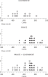
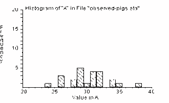
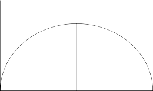
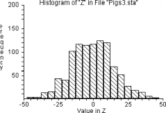
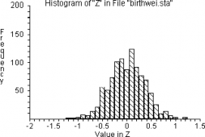
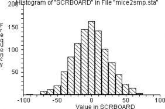
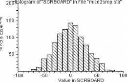
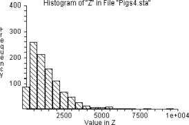

24 The Statistics of Hypothesis-Testing With Measured Data
Draft page partially ported from original PDF
This page is an automated and partial import from the original second-edition PDF.
We are in the process of updating this page for formatting, and porting any code from the original RESAMPLING-STATS language to Python and R.
Feel free to read this version for the sense, but expect there to be multiple issues with formatting.
We will remove this warning when the page has adequate formatting, and we have ported the code.
Chapter 21 and Chapter 19 discussed testing a hypothesis with data that either arrive in dichotomized (yes-no) form, or come as data in situations where it is convenient to dichotomize. We next consider hypothesis testing using measured data. Conventional statistical practice employs such devices as the “t-test” and “analysis of variance.” In contrast to those complex devices, the resampling method does not differ greatly from what has been discussed in previous chapters.
24.0.1 Example: The Pig Rations Still Once Again, Using Measured Data
Testing for the Difference Between Means of Two Equal-Sized Samples of Measured-Data Observations) (Program “Pigs3”)
Let us now treat the pig-food problem without converting the quantitative data into qualitative data, because a conversion always loses information.
The term “lose information” can be understood intuitively. Consider two sets of three sacks of corn. Set A includes sacks containing, respectively, one pound, two pounds, and three pounds. Set B includes sacks of one pound, two pounds, and a hundred pounds. If we rank the sacks by weight, the two sets can no longer be distinguished. The one-pound and two-pound sacks have ranks one and two in both cases, and their relative places in their sets are the same. But if we know not only that the one-pound sack is the smallest of its set and the three-pound or hundred-pound sack is the largest, but also that the largest sack is three pounds (or a hundred pounds), we have more information about a set than if we only know the ranks of its sacks.
Rank data are also known as “ordinal” data, whereas data measured in (say) pounds are known as “cardinal” data. Even though converting from cardinal (measured) to ordinal (ranked) data loses information, the conversion may increase convenience, and may therefore be worth doing in some cases.

We begin a measured-data procedure by noting that if the two pig foods are the same, then each of the observed weight gains came from the same benchmark universe . This is the basic tactic in our statistical strategy. That is, if the two foods came from the same universe, our best guess about the composition of that universe is that it includes weight gains just like the twenty-four we have observed , and in the same proportions, because that is all the information that we have about the universe; this is the bootstrap method. Since ours is (by definition) a sample from an infinite (or at least, a very large) universe of possible weight gains, we assume that there are many weight gains in the universe just like the ones we have observed, in the same proportion as we have observed them. For example, we assume that 2/24 of the universe is composed of 34-pound weight gains, as seen in Figure 18-1:
Figure 18-1
We recognize, of course, that weight gains other than the exact ones we observed certainly would occur in repeated experiments. And if we thought it reasonable to do so, we could assume that the “distribution” of the weight gains would follow a regular “smooth” shape such as Figure 18-2. But deciding just how to draw Figure 18-2 from the data in Figure 18-1 requires that we make arbitrary assumptions about unknown conditions. And if we were to draw Figure 18-2 in a form that would be sufficiently regular for conventional mathematical analysis, we might have to make some very strong assumptions going far beyond the observed data.
Drawing a smooth curve such as Figure 18-2 from the raw data in Figure 18-1 might be satisfactory — if done with wisdom and good judgment. But there is no necessity to draw such a smooth curve, in this case or in most cases. We can proceed by assuming simply that the benchmark universe — the universe to which we shall compare our samples, conventionally
Relative Probability
called the “null” or “hypothetical” universe — is composed only of elements similar to the observations we have in hand. We thereby lose no efficiency and avoid making unsound assumptions.

Size of Weight Gain, 30.2 = Mean
Figure 18-2
To carry out our procedure in practice: 1) Write down each of the twenty-four weight gains on a blank index card. We then have one card each for 31, 34, 29, 26, and so on. 2) Shuffle the twenty-four cards thoroughly, and pick one card. 3) Record the weight gain, and replace the card. (Recall that we are treating the weight gains as if they come from an infinite universe — that is, as if the probability of selecting any amount is the same no matter which others are selected randomly. Another way to say this is to state that each selection is independent of each other selection. If we did not replace the card before selecting the next weight gain, the selections would no longer be independent. See Chapter 11 for further discussion of this issue.) 4) Repeat this process until you have made two sets of 12 observations. 5) Call the first hand “food A” and the second hand “food B.” Determine the average weight gain for the two hands, and record it as in Table 18-1. Repeat this procedure many times.
In operational steps:
Step 1. Write down each observed weight gain on a card, e.g. 31, 34, 29...
Step 2. Shuffle and deal a card.
Step 3. Record the weight and replace the card.
Step 4. Repeat steps 2 and 3 eleven more times; call this group A.
Step 5. Repeat steps 2-3 another twelve times; call this group B.
Step 6. Calculate the mean weight gain of each group.
Step 7. Subtract the mean of group A from the mean of group B and record. If larger (more positive) than 3.16 (the difference between the observed means) or more negative than -3.16, record “more.” Otherwise record “less.”
Step 8. Repeat this procedure perhaps fifty times, and calculate the proportion “more.” This estimates the probability sought.
In none of the first ten simulated trials did the difference in the means of the random hands exceed the observed difference (3.16 pounds, in the top line in the table) between foods A and B. (The difference between group totals tells the same story and is faster, requiring no division calculations.)
In the old days before a computer was always easily available, I would quit making trials at such a point, confident that a difference in means as great as observed is not likely to happen by chance. (Using the convenient “multiplication rule” described in Chapter 9, we can estimate the probability of such an occurrence happening by chance in 10 successive trials as \(\frac{1}{2} * \frac{1}{2} * \frac{1}{2} ... = \frac{1}{2}^{10} = 1/1024 \approx .001\) = .1 percent, a small chance indeed.) Nevertheless, let us press on to do 50 trials.
Table 18-1
| Trial # | Mean of First 12 Observation s (First Hand) | Mean of Second 12 Observation s (Second Hand) | Differenc e Greater or Less Than Observed Differenc |
|
| Observed | 382 / 12=31.83 | 344 / 12=28.67 | 3.16 | |
| 1 | 368 / 12=30.67 | 357 / 12=29.75 | .87 | Less |
| 2 | 364 / 12=30.33 | 361 / 12=30.08 | .25 | Less |
| 3 | 352 / 12=29.33 | 373 / 12=31.08 | (1.75) | Less |
| 4 | 378 / 12=31.50 | 347 / 12=28.92 | 2.58 | Less |
| 5 | 365 / 12=30.42 | 360 / 12=30.00 | .42 | Less |
| 6 | 352 / 12=29.33 | 373 / 12=31.08 | (1.75) | Less |
| 7 | 355 / 12=29.58 | 370 / 12=30.83 | (1.25) | Less |
| 8 | 366 / 12=30.50 | 359 / 12=29.92 | .58 | Less |
| 9 | 360 / 12=30.00 | 365 / 12=30.42 | (.42) | Less |
| 10 | 355 / 12=29.58 | 370 / 12=30.83 | (1.25) | Less |
| 11 | 359 / 12=29.92 | 366 / 12=30.50 | (.58) | Less |
| 12 | 369 / 12=30.75 | 356 / 12=29.67 | 1.08 | ” |
Results of Fifty Random Samples for the Problem “PIGS3”
e
| Trial # | Mean of First 12 Observation s (First Hand) | Mean of Second 12 Observation s (Second Hand) | Differenc e Greater or Less Than Observed Differenc |
|
| Observed | 382 / 12=31.83 | 344 / 12=28.67 | 3.16 | |
| 13 | 360 / 12=30.00 | 365 / 12=30.42 | (.42) | Less |
| 14 | 377 / 12=31.42 | 348 / 12=29.00 | 2.42 | Less |
| 15 | 365 / 12=30.42 | 360 / 12=30.00 | .42 | Less |
| 16 | 364 / 12=30.33 | 361 / 12=30.08 | .25 | Less |
| 17 | 363 / 12=30.25 | 362 / 12=30.17 | .08 | Less |
| 18 | 365 / 12=30.42 | 360 / 12=30.00 | .42 | Less |
| 19 | 369 / 12=30.75 | 356 / 12=29.67 | 1.08 | Less |
| 20 | 369 / 12=30.75 | 356 / 12=29.67 | 1.08 | Less |
| 21 | 369 / 12=30.75 | 356 / 12=29.67 | 1.08 | Less |
| 22 | 364 / 12=30.33 | 361 / 12=30.08 | .25 | Less |
| 23 | 363 / 12=30.25 | 362 / 12=30.17 | .08 | Less |
| 24 | 363 / 12=30.25 | 362 / 12=30.17 | .08 | Less |
| 25 | 364 / 12=30.33 | 361 / 12=30.08 | .25 | Less |
| 26 | 359 / 12=29.92 | 366 / 12=30.50 | (.58) | Less |
| 27 | 362 / 12=30.17 | 363 / 12=30.25 | (.08) | Less |
| 28 | 362 / 12=30.17 | 363 / 12=30.25 | (.08) | Less |
| 29 | 373 / 12=31.08 | 352 / 12=29.33 | 1.75 | Less |
| 30 | 367 / 12=30.58 | 358 / 12=29.83 | .75 | Less |
| 31 | 376 / 12=31.33 | 349 / 12=29.08 | 2.25 | Less |
| 32 | 365 / 12=30.42 | 360 / 12=30.00 | .42 | Less |
| 33 | 357 / 12=29.75 | 368 / 12=30.67 | (1.42) | Less |
| 34 | 349 / 12=29.08 | 376 / 12=31.33 | 2.25 | Less |
| 35 | 356 / 12=29.67 | 396 / 12=30.75 | (1.08) | Less |
| 36 | 359 / 12=29.92 | 366 / 12=30.50 | (.58) | Less |
| 37 | 372 / 12=31.00 | 353 / 12=29.42 | 1.58 | Less |
| 38 | 368 / 12=30.67 | 357 / 12=29.75 | .92 | Less |
| 39 | 344 / 12=28.67 | 382 / 12=31.81 | (3.16) | Equal |
| 40 | 365 / 12=30.42 | 360 / 12=30.00 | .42 | Less |
| 41 | 375 / 12=31.25 | 350 / 12=29.17 | 2.08 | Less |
| 42 | 353 / 12=29.42 | 372 / 12=31.00 | (1.58) | Less |
| 43 | 357 / 12=29.75 | 368 / 12=30.67 | (.92) | Less |
| 44 | 363 / 12=30.25 | 362 / 12=30.17 | .08 | Less |
| 45 | 353 / 12=29.42 | 372 / 12=31.00 | (1.58) | Less |
| 46 | 354 / 12=29.50 | 371 / 12=30.92 | (1.42) | Less |
| 47 | 353 / 12=29.42 | 372 / 12=31.00 | (1.58) | Less |
| 48 | 366 / 12=30.50 | 350 / 12=29.92 | .58 | Less |
| 49 | 364 / 12=30.53 | 361 / 12=30.08 | .25 | Less |
| 50 | 370 / 12=30.83 | 355 / 12=29.58 | 1.25 | Less |
Table 18-1 (continued)
e
Table 18-1 shows fifty trials of which only one (the thirty-ninth) is as “far out” as the observed samples. These data give us an estimate of the probability that, if the two foods come from the same universe, a difference this great or greater would occur just by chance. (Compare this 2 percent estimate with the probability of roughly 1 percent estimated with the conventional t test — a “significance level” of 1 percent.) On the average, the test described in this section yields a significance level as high as such mathematical-probability tests as the t test — that is, it is just as efficient — though the tests described in Examples 15-6 and 17-1 are likely to be less efficient because they convert measured data to ranked or classified data. 1
It is not appropriate to say that these data give us an estimate of the probability that the foods “do not come” from the same universe. This is because we can never state a probability that a sample came from a given universe unless the alternatives are fully specified in advance.2
This example also illustrates how the dispersion within samples affects the difficulty of finding out whether the samples differ from each other. For example, the average weight gain for food A was 32 pounds, versus 29 pounds for food B. If all the food A-fed pigs had gained weight within a range of say 29.9 and 30.1 pounds, and if all the food B-fed pigs had gained weight within a range of 28.9 and 29.1 pounds — that is, if the highest weight gain in food B had been lower than the lowest weight gain in food A — then there would be no question that food A is better, and even fewer observations would have made this statistically conclusive. Variation (dispersion) is thus of great importance in statistics and in the social sciences. The larger the dispersion among the observations within the samples, the larger the sample size necessary to make a conclusive comparison between two groups or reliable estimates of summarization statistics. (The dispersion might be measured by the mean absolute deviation (the average absolute difference between the mean and the individual observations, treating both plus and minus differences as positive), the variance (the average squared difference between the mean and the observations), the standard deviation (the square root of the variance), the range (the difference between the smallest and largest observations), or some other device.)
If you are performing your tests by hand rather than using a computer (a good exercise even nowadays when computers are so accessible), you might prefer to work with the median instead of the mean, because the median requires less computation. (The median also has the advantage of being less influenced by a single far-out observation that might be quite atypical; all measures have their special advantages and disadvantages.) Simply compare the difference in medians of the twelve-pig resamples to the difference in medians of the actual samples, just as was done with the means. The only operational difference is to substitute the word “median” for the word “mean” in the steps listed above. You may need a somewhat larger number of trials when working with medians, however, for they tend to be less precise than means.
The RESAMPLING STATS program compares the difference in the sums of the weight gains for the actual pigs against the difference resulting from two randomly-chosen groups of pigs, using the same numerical weight gains of individual pigs as were obtained in the actual experiment. If the differences in average weight gains of the randomly ordered groups are rarely as large as the difference in weight gains from the actual sets of pigs fed food A-alpha and food B-beta, then we can conclude that the foods do make a difference in pigs’ weight gains.
Note first that pigs in group A gained a total of 382 pounds while group B gained a total of 344 pounds — 38 fewer. To minimize computations, we will deal with totals like these, not averages.
First we construct vectors A and B of the weight gains of the pigs fed with the two foods. Then we combine the two vectors into one long vector and select two groups of 12 randomly and with replacement (the two SAMPLE commands). We SUM the weight gains for the two resamples, and calculate the difference. We keep SCORE of those differences, graph them on a HISTOGRAM, and see how many times resample A exceeded resample B by at least 38 pounds, or vice versa (we are testing whether the two are different, not whether food A produces larger weight gains).
' Program file: "testing_measured_00.rss"
NUMBERS (31 34 29 26 32 35 38 34 31 29 32 31) a
' Record group a's weight gains.
NUMBERS (26 24 28 29 30 29 31 29 32 26 28 32) b
' Record group b's weight gains.
CONCAT a b c
' Combine a and b together in one long vector.
REPEAT 1000
' Do 1000 experiments.
SAMPLE 12 c d
' Take a "resample" of 12 with replacement from c and put it in d.
SAMPLE 12 c e
' Take another "resample."
SUM d dd
' Sum the first "resample."
SUM e ee
' Sum the second "resample."
SUBTRACT dd ee f
' Calculate the difference between the two resamples.
SCORE f z
' Keep track of each trial result.
END
' End one experiment, go back and repeat until all trials are complete,
' then proceed.
HISTOGRAM z
' Produce a histogram of trial results.PIGS3: Difference Between Two Resamples
Sum of Weight Gains

1 st resample less 2 nd
From this histogram we see that none of the trials produced a difference between groups as large as that observed (or larger). RESAMPLING STATS will calculate this for us with the following commands:
' Program file: "pigs3.rss"
COUNT z >= 38 k
' Determine how many of the trials produced a difference between resamples
' \>= 38.
COUNT z <= -38 l
' Likewise for a difference of -38.
ADD k l m
' Add the two together.
DIVIDE m 1000 mm
' Convert to a proportion.
PRINT mm
' Print the result.
' Note: The file "pigs3" on the Resampling Stats software disk contains
' this set of commands.24.0.2 Example: Is There a Difference in Liquor Prices Between State-Run and Privately-Run Systems?
This is an example of testing for differences between means of unequal-sized samples of measured data.
In the 1960s I studied the price of liquor in the sixteen “monopoly” states (where the state government owns the retail liquor stores) compared to the twenty-six states in which retail liquor stores are privately owned. (Some states were omitted for technical reasons. And it is interesting to note that the situation and the price pattern has changed radically since then.) These data were introduced in the context of a problem in probability in Chapter 12.
These were the representative 1961 prices of a fifth of Seagram 7 Crown whiskey in the two sets of states:3
16 monopoly states: $4.65, $4.55, $4.11, $4.15, $4.20, $4.55, $3.80,
$4.00, $4.19, $4.75, $4.74, $4.50, $4.10, $4.00, $5.05, $4.20
Mean = $4.35
26 private-ownership states: $4.82, $5.29, $4.89, $4.95, $4.55, $4.90,
$5.25, $5.30, $4.29, $4.85, $4.54, $4.75, $4.85, $4.85, $4.50, $4.75,
$4.79, $4.85, $4.79, $4.95, $4.95, $4.75, $5.20, $5.10, $4.80, $4.29.
Mean = $4.84
The economic question that underlay the investigation — having both theoretical and policy ramifications — is as follows: Does state ownership affect prices? The empirical question is whether the prices in the two sets of states were systematically different. In statistical terms, we wish to test the hypothesis that there was a difference between the groups of states related to their mode of liquor distribution, or whether the observed $.49 differential in means might well have occurred by happenstance. In other words, we want to know whether the two sub-groups of states differed systematically in their liquor prices, or whether the observed pattern could well have been produced by chance variability.
The first step is to examine the two sets of data graphically to see whether there was such a clear-cut difference between them — of the order of Snow’s data on cholera, or the Japanese Navy data on beri-beri — that no test was necessary. The separate displays, and then the two combined together, are shown in Figure 24.1; the answer is not clear-cut and hence a formal test is necessary.
At first I used a resampling permutation test as follows: Assuming that the entire universe of possible prices consists of the set of events that were observed, because that is all the information available about the universe, I wrote each of the forty-two observed state prices on a separate card. The shuffled deck simulated a situation in which each state has an equal chance for each price.
On the “null hypothesis” that the two groups’ prices do not reflect different price-setting mechanisms, but rather differ only by chance, I then examined how often that simulated universe stochastically produces groups with results as different as observed in 1961. I repeatedly dealt groups of 16 and 26 cards, without replacing the cards, to simulate hypothetical monopoly-state and private-state samples, each time calculating the difference in mean prices.
The probability that the benchmark null-hypothesis universe would produce a difference between groups as large or larger than observed in 1961 is estimated by how frequently the mean of the group of randomly-chosen sixteen prices from the simulated state-ownership universe is less than (or equal to) the mean of the actual sixteen state-ownership prices. If the simulated difference between the randomly-chosen groups was frequently equal to or greater than observed in 1961, one would not conclude that the observed difference was due to the type of retailing system because it could well have been due to chance variation.
The results — not even one “success” in 10,000 trials — imply that there is a very small probability that two groups with mean prices as different as were observed would happen by chance if drawn from the universe of 42 observed prices. So we “reject the null hypothesis” and instead find persuasive the proposition that the type of liquor distribution system influences the prices that consumers pay.4
As I shall discuss later, the logical framework of this resampling version of the permutation test differs greatly from the formulaic version, which would have required heavy computation. The standard conventional alternative would be a Student’s t-test, in which the user simply plugs into an unintuitive formula and reads the result from a table. And because of the unequal numbers of cases and unequal dispersions in the two samples, an appropriate t-test is far from obvious, whereas resampling is not made more difficult by such realistic complications.
A program to handle the liquor problem with an infinite-universe bootstrap distribution simply substitutes the random sampling command SAMPLE for the SHUFFLE/TAKE commands. The results of the new test are indistinguishable from those in the program given above.
Still another difficult question is whether any hypothesis test is appropriate, because the states were not randomly selected for inclusion in one group or another, and the results could be caused by factors other than the liquor system; this applies to both the above methods. The states constitute the entire universe in which we are interested, rather than being a sample taken from some larger universe as with a biological experiment or a small survey sample. But this objection pertains to a conventional test as well as to resampling methods. And a similar question arises throughout medical and social science — to the two water suppliers between which John Snow detected vast differences in cholera rates, to rates of lung cancer in human smokers, to analyses of changes in speeding laws, and so on.
The appropriate question is not whether the units were assigned randomly, however, but whether there is strong reason to believe that the results are not meaningful because they are the result of a particular “hidden” variable.
These debates about fundamentals illustrate the unsettled state of statistical thinking about basic issues. Other disciplines also have their controversies about fundamentals. But in statistics these issues arise as early as the introductory course, because all but the most contrived problems are shot through with these questions. Instructors and researchers usually gloss over these matters, as Gigerenzer et al., show ( The Empire of Chance ). Again, because with resampling one does not become immersed in the difficult mathematical techniques that underlie conventional methods, one is quicker to see these difficult questions, which apply equally to conventional methods and resampling.
Example 18-3: Is There a Difference Between Treatments to Prevent Low Birthweights?
Next we consider the use of resampling with measured data to test the hypothesis that drug A prevents low birthweights (Rosner, 1982, p. 257). The data for the treatment and control groups are shown in Table 18-2.
Table 18-2
Birthweights in a Clinical Trial to Test a Drug for Preventing Low Birthweights
| Treatment Group | Control Group |
| 6.9 | 6.4 |
| 7.6 | 6.7 |
| 7.3 | 5.4 |
| 7.6 | 8.2 |
| 6.8 | 5.3 |
| 7.2 | 6.6 |
| 8.0 | 5.8 |
| 5.5 | 5.7 |
| 5.8 | 6.2 |
| 7.3 | 7.1 |
| 8.2 | 7.0 |
| 6.9 | 6.9 |
| 6.8 | 5.6 |
| 5.7 | 4.2 |
| 8.6 | 6.8 |
| Average: 7.08 | 6.26 |
Source: Rosner, Table 8.7
The treatment group averaged .82 pounds more than the control group. Here is a resampling approach to the problem:
If the drug has no effect, our best guess about the “universe” of birthweights is that it is composed of (say) a million each of the observed weights, all lumped together. In other words, in the absence of any other information or compelling theory, we assume that the combination of our samples is our best estimate of the universe. Hence let us write each of the birthweights on a card, and put them into a hat. Drawing them one by one and then replacing them is the operational equivalent of a very large (but equal) number of each birthweight.
Repeatedly draw two samples of 15 birthweights each, and check how frequently the observed difference is as large as, or larger than, the actual difference of .82 pounds.
We find in the RESAMPLING STATS program below that only 1 percent of the pairs of hypothetical resamples produced means that differed by as much as .82. We therefore conclude that the observed difference is unlikely to have occurred by chance.
' Program file: "testing_measured_02.rss"
NUMBERS (6.9 7.6 7.3 7.6 6.8 7.2 8.0 5.5 5.8 7.3 8.2 6.9 6.8 5.7 8.6) treat
NUMBERS (6.4 6.7 5.4 8.2 5.3 6.6 5.8 5.7 6.2 7.1 7.0 6.9 5.6 4.2 6.8) control
CONCAT treat control all
' Combine all birthweight observations in same vector
REPEAT 1000
' Do 1000 simulations
SAMPLE 15 all treat$
' Take a resample of 15 from all birth weights (the \$ indicates a
' resampling counterpart to a real sample)
SAMPLE 15 all control$
' Take a second, similar resample
MEAN treat$ mt
' Find the means of the two resamples
MEAN control$ mc
SUBTRACT mt mc dif
' Find the difference between the means of the two resamples
SCORE dif z
' Keep score of the result
END
' End the simulation experiment, go back and repeat
HISTOGRAM z
' Produce a histogram of the resample differences
COUNT z >= 0.82 k
' How often did resample differences exceed the observed difference of
' .82?
Resample differences in pounds
Result: Only 1.3 percent of the pairs of resamples produced means that differed by as much as .82. We can conclude that the observed difference is unlikely to have occurred by chance.
24.0.3 Example: Bootstrap Sampling with Replacement
Efron and Tibshirani (1993, 11) present this as their basic problem illustrating the bootstrap method: Seven mice were given a new medical treatment intended to improve their survival rates after surgery, and nine mice were not treated. The numbers of days the treated mice survived were 94, 38, 23, 197, 99, 16 and 14, whereas the numbers of days the untreated mice (the control group) survived were 52, 10, 40, 104, 51, 27, 146, 30, and 46. The question we ask is: Did the treatment prolong survival, or might chance variation be responsible for the observed difference in mean survival times?
We start by supposing the treatment did NOT prolong survival and that chance was responsible. If that is so, then we consider that the two groups came from the same universe. Now we’d like to know how likely it is that two groups drawn from this common universe would differ as much as the two observed groups differ.
If we had unlimited time and money, we would seek additional samples in the same way that we obtained these. Lacking time and money, we create a hypothetical universe that embodies everything we know about such a common universe. We imagine replicating each sample element millions of times to create an almost infinite universe that looks just like our samples. Then we can take resamples from this hypothetical universe and see how they behave.
Even on a computer, creating such a large universe is tedious so we use a shortcut. We replace each element after we pick it for a resample. That way, our hypothetical (bootstrap) universe is effectively infinite.
The following procedure will serve:
Calculate the difference between the means of the two observed samples – it’s 30.63 days in favor of the treated mice.
Consider the two samples combined (16 observations) as the relevant universe to resample from.
Draw 7 hypothetical observations with replacement and designate them “Treatment”; draw 9 hypothetical observations with replacement and designate them “Control.”
Compute and record the difference between the means of the two samples.
Repeat steps 2 and 3 perhaps 1000 times.
Determine how often the resampled difference exceeds the observed difference of 30.63.
The following program (“mice2smp”) follows the above procedure:
' Program file: "testing_measured_03.rss"
NUMBERS (94 38 23 197 99 16 141) treatmt
' treatment group
NUMBERS (52 10 40 104 51 27 146 30 46) control
' control group
CONCAT treatmt control u
' U is our universe (step 2 above)
REPEAT 1000
' step 5 above
SAMPLE 7 u treatmt$
' step 3 above
SAMPLE 9 u control$
' step 3
MEAN treatmt$ tmean
' step 4
MEAN control$ cmean
' step 4
SUBTRACT tmean cmean diff
' step 4
SCORE diff scrboard
' step 4
END
' step 5
HISTOGRAM scrboard
COUNT scrboard >=30.63 k
' step 6
DIVIDE k 1000 prob
PRINT prob
Result: PROB = 0.112
Interpretation: 1000 simulated resamples (of sizes 7 and 9) from a combined universe produced a difference as big as 30.63 more than 11 percent of the time. We cannot rule out the possibility that chance might be responsible for the observed advantage of the treatment group.
Example 18-5: Permutation Sampling Without Replacement
This section discusses at some length the question of when sampling with replacement (the bootstrap), and sampling without replacement (permutation or “exact” test) are the appropriate resampling methods. The case at hand seems like a clearcut case where the bootstrap is appropriate. (Note that in this case we draw both samples from a combined universe consisting of all observations, whether we do so with or without replacement.) Nevertheless, let us see how the technique would differ if one were to consider that the permutation test is appropriate. The algorithm would then be as follows (with the steps that are the same as above labeled “a” and those that are different labeled “b”):
1a. Calculate the difference between the means of the two observed samples – it’s 30.63 days in favor of the treated mice.
2a. Consider the two samples combined (16 observations) as the relevant universe to resample from.
3b. Draw 7 hypothetical observations without replacement and designate them “Treatment”; draw 9 hypothetical observations with replacement and designate them “Control.”
4a. Compute and record the difference between the means of the two samples.
5a. Repeat steps 2 and 3 perhaps 1000 times
6a. Determine how often the resampled difference exceeds the observed difference of 30.63.
Here is the RESAMPLING STATS program:
' Program file: "testing_measured_04.rss"
NUMBERS (94 38 23 197 99 16 141) treatmt
' treatment group
NUMBERS (52 10 40 104 51 27 146 30 46) control
' control group
CONCAT treatmt control u
' U is our universe (step 2 above)
REPEAT 1000
' step 5 above
SHUFFLE u ushuf
TAKE ushuf 1,7 treatmt$
' step 3 above
TAKE ushuf 8,16 control$
' step 3
MEAN treatmt$ tmean
' step 4
MEAN control$ cmean
' step 4
SUBTRACT tmean cmean diff
' step 4
SCORE diff scrboard
' step 4
END
' step 5
HISTOGRAM scrboard
COUNT scrboard >=30.63 k
' step 6
DIVIDE k 1000 prob
PRINT prob
Result: prob = 0.145
Interpretation: 1000 simulated resamples (of sizes 7 and 9) from a combined universe produced a difference as big as 30.63 more than 14 percent of the time. We therefore should not rule out the possibility that chance might be responsible for the observed advantage of the treatment group.
24.1 Differences among four means
Example 18-6: Differences Among Four Pig Rations (Test for Differences Among Means of More Than Two Samples of Measured Data) (File “PIGS4”)
In Examples 15-1 and 15-4 we investigated whether or not the results shown by a single sample are sufficiently different from a null (benchmark) hypothesis so that the sample is unlikely to have come from the null-hypothesis benchmark universe. In Examples 15-7, 17-1, and 18-1 we then investigated whether or not the results shown by two samples suggest that both had come from the same universe, a universe that was assumed to be the composite of the two samples. Now as in Example 17-2 we investigate whether or not several samples come from the same universe, except that now we work with measured data rather than with counted data.
If one experiments with each of 100 different pig foods on twelve pigs, some of the foods will show much better results than will others just by chance , just as one family in sixteen is likely to have the very “high” number of 4 daughters in its first four children. Therefore, it is wrong reasoning to try out the 100 pig foods, select the food that shows the best results, and then compare it statistically with the average (sum) of all the other foods (or worse, with the poorest food). With such a procedure and enough samples, you will surely find one (or more) that seems very atypical statistically. A bridge hand with 12 or 13 spades seems very atypical, too, but if you deal enough bridge hands you will sooner or later get one with 12 or 13 spades — as a purely chance phenomenon, dealt randomly from a standard deck. Therefore we need a test that prevents our falling into such traps. Such a test usually operates by taking into account the differences among all the foods that were tried.
The method of Example 18-1 can be extended to handle this problem. Assume that four foods were each tested on twelve pigs. The weight gains in pounds for the pigs fed on foods A and B were as before. For foods C and D the weight gains were:
Ration C: 30, 30, 32, 31, 29, 27, 25, 30, 31, 32, 34, 33
Ration D: 32, 25, 31, 26, 32, 27, 28, 29, 29, 28, 23, 25
Now construct a benchmark universe of forty-eight index cards, one for each weight gain. Then deal out sets of four hands randomly. More specifically:
Step 1. Constitute a universe of the forty-eight observed weight gains in the four samples, writing the weight gains on cards.
Step 2. Draw four groups of twelve weight gains, with replacement, since we are drawing from a hypothesized infinite universe in which consecutive draws are independent. Determine whether the difference between the lowest and highest group means is as large or larger than the observed difference. If so write “yes,” otherwise “no.”
Step 3. Repeat step 2 fifty times.
Step 4. Count the trials in which the differences between the simulated groups with the highest and lowest means are as large or larger than the differences between the means of the highest and lowest observed samples. The proportion of such trials to the total number of trials is the probability that all four samples would differ as much as do the observed samples if they (in technical terms) come from the same universe.
The problem “Pigs4,” as handled by the steps given above, is quite similar to the way we handled Example TKTK, except that the data are measured (in pounds of weight gain) rather than simply counted (the number of rehabilitations).
Instead of working through a program for the procedure outlined above, let us consider a different approach to the problem — computing the difference between each pair of foods, six differences in all, converting all minus (-) signs to (+) differences. Then we can total the six differences, and compare the total with the sum of the six differences in the observed sample. The proportion of the resampling trials in which the observed sample sum is exceeded by the sum of the differences in the trials is the probability that the observed samples would differ as much as they do if they come from the same universe.5
One naturally wonders whether this latter test statistic is better than the range, as discussed above. It would seem obvious that using the information contained in all four samples should increase the precision of the estimate. And indeed it is so, as you can confirm for yourself by comparing the results of the two approaches. But in the long run, the estimate provided by the two approaches would be much the same. That is, there is no reason to think that one or another of the estimates is biased . However, successive samples from the population would steady down faster to the true value using the four-groupbased estimate than they would using the range. That is, the four-group-based estimate would require a smaller sample of pigs.
Is there reason to prefer one or the other approach from the point of view of some decision that might be made? One might think that the range procedure throws light on which one of the foods is best in a way that the four-group-based approach does not. But this is not correct. Both approaches answer this question, and only this question: Are the results from the four foods likely to have resulted from the same “universe” of weight gains or not? If one wants to know whether the best food is similar to, say, all the other three, the appropriate approach would be a two -sample approach similar to various two -sample examples discussed earlier. (It would be still another question to ask whether the best food is different from the worst. One would then use a procedure different from either of those discussed above.)
If the foods cost the same, one would not need even a twosample analysis to decide which food to feed. Feed the one whose results are best in the experiment, without bothering to ask whether it is “really” the best; you can’t go wrong as long as it doesn’t cost more to use it. (One could inquire about the probability that the food yielding the best results in the experiment would attain those results by chance even if it was worse than the others by some stipulated amount, but pursuing that line of thought may be left to the student as an exercise.)
In the problem “Pigs4,” we want a measure of how the groups differ. The obvious first step is to add up the total weight gains for each group: 382, 344, 364, 335. The next step is to calculate the differences between all the possible combinations of groups: 382-344=38, 382-364=18, 382-335=47, 344-364= -20, 344-335=9, 364-335=29.
24.2 Using Squared Differences
Here we face a choice. We could work with the absolute differences — that is, the results of the subtractions — treating each result as a positive number even if it is negative. We have seen this approach before. Therefore let us now take the opportunity of showing another approach. Instead of working with the absolute differences, we square each difference, and then SUM the squares. An advantage of working with the squares is that they are positive — a negative number squared is positive — which is convenient. Additionally, conventional statistics works mainly with squared quantities, and therefore it is worth getting familiar with that point of view. The squared differences in this case add up to 5096.
Using RESAMPLING STATS, we shuffle all the weight gains together, select four random groups, and determine whether the squared differences in the resample exceed 5096. If they do so with regularity, then we conclude that the observed differences could easily have occurred by chance.
With the CONCAT command, we string the four vectors into a single vector. After SHUFFLEing the 48-pig weight-gain vector G into H, we TAKE four randomized samples. And we compute the squared differences between the pairs of groups and SUM the squared differences just as we did above for the observed groups.
Last, we examine how often the simulated-trials data produce differences among the groups as large as (or larger than) the actually observed data — 5096.
' Program file: "pigs4.rss"
NUMBERS (34 29 26 32 35 38 31 34 30 29 32 31) a
NUMBERS (26 24 28 29 30 29 32 26 31 29 32 28) b
NUMBERS (30 30 32 31 29 27 25 30 31 32 34 33) c
NUMBERS (32 25 31 26 32 27 28 29 29 28 23 25) d
' (Record the data for the 4 foods)
CONCAT a b c d g
' Combine the four vectors into g
REPEAT 1000
' Do 1000 trials
SHUFFLE g h
' Shuffle all the weight gains.
SAMPLE 12 h p
' Take 4 random samples, with replacement.
SAMPLE 12 h q
SAMPLE 12 h r
SAMPLE 12 h s
SUM p i
' Sum the weight gains for the 4 resamples.
SUM q j
SUM r k
SUM s l
SUBTRACT i j ij
' Find the differences between all the possible pairs of resamples.
SUBTRACT i k ik
SUBTRACT i l il
SUBTRACT j k jk
SUBTRACT j l jl
SUBTRACT k l kl
MULTIPLY ij ij ijsq
' Find the squared differences.
MULTIPLY ik ik iksq
MULTIPLY il il ilsq
MULTIPLY jk jk jksq
MULTIPLY jl jl jlsq
MULTIPLY kl kl klsq
ADD ijsq iksq ilsq jksq jlsq klsq total
' Add them together.
SCORE total z
' Keep track of the total for each trial.
END
' End one trial, go back and repeat until 1000 trials are complete.
HISTOGRAM z
' Produce a histogram of the trial results.
COUNT z >= 5096 k
' Find out how many trials produced differences among groups as great as
' or greater than those observed.
DIVIDE k 1000 kk
' Convert to a proportion.
PRINT kk
' Print the result.
' Note: The file "pigs4" on the Resampling Stats software disk contains
' this set of commands.PIGS4: Differences Among Four Pig Rations

sums of squares
We find that our observed sum of squares — 5096 — was exceeded by randomly-drawn sums of squares in only 3 percent of our trials. We conclude that the four treatments are likely not all similar.
24.3 Exercises
Solutions for problems may be found in the section titled, “Exercise Solutions” at the back of this book.
Exercise 18-1
The data shown in Table 18-3 (Hollander and Wolfe 1999, 39, Table 3.1) might be data for the outcomes of two different mechanics, showing the length of time until the next overhaul is needed for nine pairs of similar vehicles. Or they could be two readings made by different instruments on the same sample of rock. In fact, they represent data for two successive tests for depression on the Hamilton scale, before and after drug therapy.
Table 18-3
Hamilton Depression Scale Values
| Patient # | Score Before | Score After |
|---|---|---|
| 1 2 3 4 5 6 7 8 9 | 1.83 .50 1.62 2.48 1.68 1.88 1.55 3.06 1.3 | .878 .647 .598 2.05 1.06 1.29 1.06 3.14 1.29 |
The task is to perform a test that will help decide whether there is a difference in the depression scores at the two visits (or the performances of the two mechanics). Perform both a bootstrap test and a permutation test, and give some reason for preferring one to the other in principle. How much do they differ in practice?
Exercise 18-2
Thirty-six of 72 (.5) taxis surveyed in Pittsburgh had visible seatbelts. Seventy-seven of 129 taxis in Chicago (.597) had visible seatbelts. Calculate a confidence interval for the difference in proportions, estimated at -.097. (Source: Peskun, Peter H., “A New Confidence Interval Method Based on the Normal Approximation for the Difference of Two Binomial Probabilities,” Journal of the American Statistical Association , 6/93 p. 656).